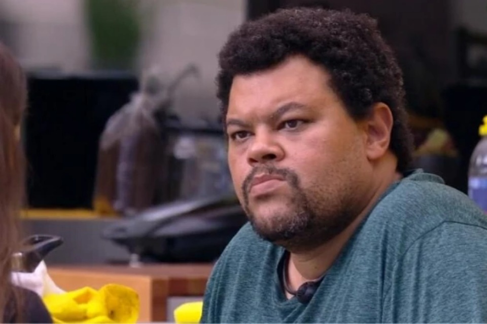

Mussum Ipsum, cacilds vidis litro abertis. Leite de capivaris, leite de mula manquis sem cabeça. Mauris nec dolor in eros commodo tempor. Aenean aliquam molestie leo, vitae iaculis nisl. Em pé sem cair, deitado sem dormir, sentado sem cochilar e fazendo pose. Nullam volutpat risus nec leo commodo, ut interdum diam laoreet. Sed non consequat odio. Si u mundo tá muito paradis? Toma um mé que o mundo vai girarzis! Copo furadis é disculpa de bebadis, arcu quam euismod magna. Quem num gosta di mé, boa gentis num é. Todo mundo vê os porris que eu tomo, mas ninguém vê os tombis que eu levo! Mé faiz elementum girarzis, nisi eros vermeio. Detraxit consequat et quo num tendi nada. Pra lá , depois divoltis porris, paradis. Viva Forevis aptent taciti sociosqu ad litora torquent. Suco de cevadiss deixa as pessoas mais interessantis. Per aumento de cachacis, eu reclamis. Quem num gosta di mim que vai caçá sua turmis! Não sou faixa preta cumpadi, sou preto inteiris, inteiris. Posuere libero varius. Nullam a nisl ut ante blandit hendrerit. Aenean sit amet nisi. Si num tem leite então bota uma pinga aí cumpadi! Manduma pindureta quium dia nois paga. Atirei o pau no gatis, per gatis num morreus.
